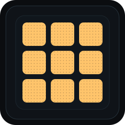

One workbench.
Images, audio, video, PDFs, archives, and files. 65 focused operations with sensible defaults and native tools underneath.

WorkbenchLocal-first · terminal-native
Convert, compress, transcribe, and transform local media and documents. Batch it, chain it, or hand it to an agent.
go install github.com/solomonadzape95/workbench/cmd/workbench@latest
Go 1.26+ · or download a release binary from Releases.
Images, audio, video, PDFs, archives, and files. 65 focused operations with sensible defaults and native tools underneath.
Build a pipeline once, save it, and re-run it on a folder. Press n, pick your steps, press ctrl+r.
A local HTTP API, SSE events, an OpenAPI schema, and an MCP server. Your agent can call the same runner as the TUI.
convert → compress → hash
No cloud. No upload. Your files stay where you put them.